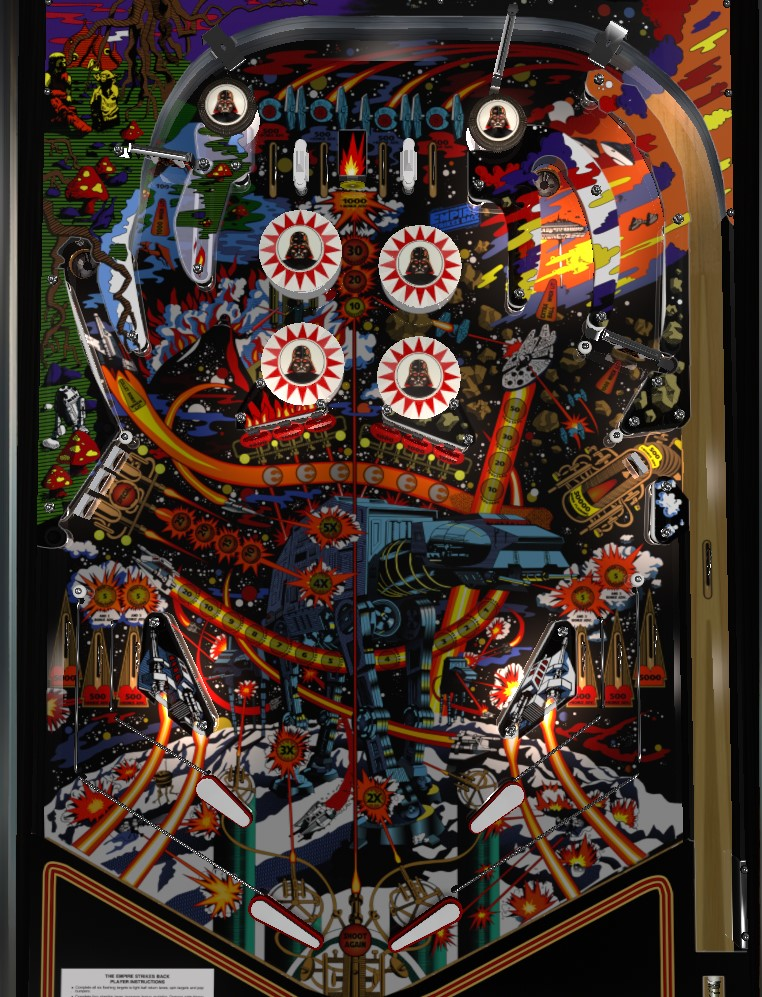

Not to be confused with other licensed Star Wars pinball games, such as Star Wars (Data East, 1992), Star Wars Trilogy (Sega, 1997), Star Wars Episode I (Bally Williams, 1999), or Star Wars (Stern Pinball, 2017).
The Empire Strikes Back's layout is a weird hybrid of Firepower and Space Invaders, but doesn't really play like either. Scoring is dominated by the upper right saucer, which scores an increasing value of up to 50,000 points. Completing all 6 center standup targets lights the spinners in the orbits, which should be the go-to shot whenever the upper right saucer is unviable. Center target completions also light in lanes for extra bonus advances; lit in lanes can also qualify bonus collect and extra ball at the left or right saucers.
Top lanes always score 500 points and a bonus advance. Make an unlit top lane to light it. The position of lit lanes can be rotated with lane change from the right flipper only. Lighting all 4 top lanes advances the bonus multiplier in the sequence 2x-3x-4x-5x, and also advances the value of the single standup target just above the bumpers in the sequence 1,000 (unlit) - 10,000 - 20,000 - 30,000.
The 6 center targets always score 1,000 points and a bonus advance. Hit a flashing target to light it solidly; light all 6 targets solidly to complete and reset them.
The first completion of the center standups lights both spinners for 1,000 points per spin and lights the near in lanes. Making a near in lane when lit scores 5,000 points plus 3 bonus advances, lights two pop bumpers for 1,000 points instead of 100, and lights the left saucer for Collect Bonus for the rest of the ball.
The second completion of the enter standups lights the remaining two pop bumpers and lights the far in lanes. Making a far in lane when lit scores 5,000 points plus 3 bonus advances and lights the upper right saucer for extra ball.
Making the upper right saucer scores and advances the lit value: 10,000 - 20,000 - 30,000 - 50,000. This saucer value only resets when the ball drains. This saucer is also lit for extra ball after completing the center standup targets twice, then rolling through either far in lane. The upper right saucer is a very friendly shot worth massive points that should always be the top priority on The Empire Strikes Back.
Each target down in the left bank scores 500 points and a bonus advance. Completing the bank scores 10,000 the first time, 15,000 the second time, 20,000 the third time, 25,000 the fourth time, and 25,000 plus a Special each time starting with the fifth.
The left saucer scores the current drop target completion value (but only the points, not the Special, even if the Special is lit). If the center standup targets have been completed once and a near in lane has been made on the current ball, the left saucer also scores a bonus collect, which collects the full bonus including multiplier and does not reset any part of the bonus. Theoretically, this saucer can become a repeatable shot worth over 200,000 points, but its placement near the edge of the table, its narrow entrance, and the work that goes into building a large bonus mean that I still favor the upper right saucer for repeatable scoring.
Spinners score 100 points per spin, or 1,000 when lit. Completing the center standup targets once lights the spinners for the rest of the ball. Full shots to either spinner are the only reliable way to get the ball up to the top lanes to earn more bonus multipliers.
The single drop target on the right scores 500 points and a bonus advance. When it is knocked down, the ball can reenter the shooter lane for a replunge; doing so collects the current end of ball bonus and does not reset any part of it. However, wait to replunge the ball until after the bonus finishes collecting, because you won't get credit for any scoring or top lanes that are made while the bonus is still counting. Shooting the free ball lane is the only way to reset the single drop target on the right.
Occasionally, and seemingly randomly, after hitting a flashing center standup target, an arrow pointing at the right drop target/free ball lane will flash for about 8 seconds, with a sound effect playing in time with the flashing as well. Hitting the right drop target (if it is raised) or shooting the free ball lane (if the drop target was already knocked down) while this arrow is flashing will score 50,000 points on top of the drop target value or the free ball lane's bonus collect.
The Empire Strikes Back has a double-stacked table bottom, similar to Bally's Space Invaders. Each side has one slingshot (which scores 10 points), two in lanes, and one out lane.
The near in lanes feed mini-flippers above and slightly to the outside of the main flippers. These flippers are best used for ball control rather than shotmaking. Near in lanes score 500 points and a bonus advance when not lit, or 5,000 plus 3 advances when lit; they are lit after the center standup targets are completed once. Making a lit near in lane lights the left saucer for Collect Bonus.
The far in lanes feed the main flippers, which are of conventional size and location. Far in lanes also score 500 points and a bonus advance when not lit, or 5,000 plus 3 advances when lit; they are lit after completing the center standup targets twice. Making a lit far in lane lights the upper right saucer for extra ball.
Out lanes always score 5,000 points only.
Bonus is advanced by any top lane, drop target, standup target, or in lane. Bonus multiplier is advanced by completing the top lanes. Max bonus is 5x 39,000 = 195,000 points. Bonus can be collected mid-ball at the left saucer when lit or at the free ball lane. The status of the top lanes and the bonus multiplier can be carried from ball to ball (this is an operator setting that can be disabled). Base bonus is never carried from ball to ball. Mid-ball bonus collects do not reset any part of the bonus.
There do not appear to be any settings that award a point value in place of extra balls or specials for competition/novelty play. Further, there does not seem to be a way to disable extra balls, so I would expect that in a tournament setting, it would be required to simply plunge (and not flip) any extra balls.
A setting for the left drop targets makes it so that the 4th completion of the drops scores 25,000 + Special, instead of the 4th completion scoring just 25,000 and Specials being award starting with the 5th completion.
Memory for the top lanes lights and for earned bonus multipliers can independently be enabled or disabled.